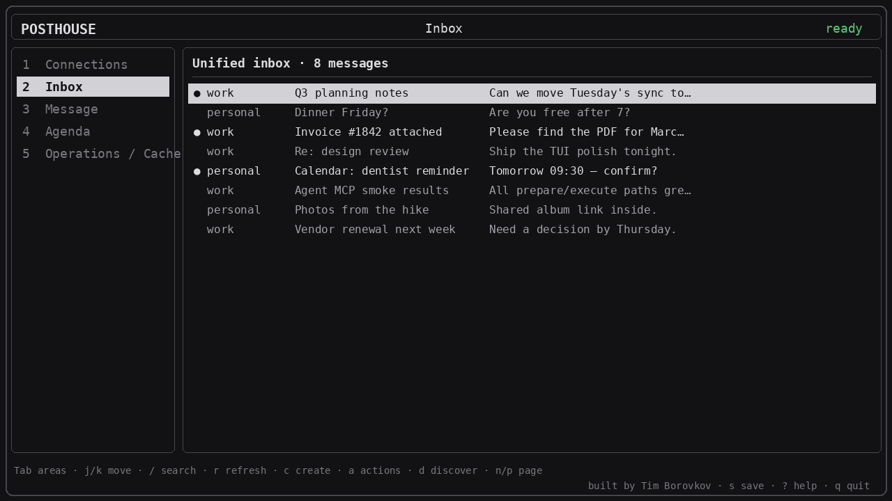

POSTHOUSE
One local switchboard across your mail and calendars — ready for your agents.
Free and open source. Posthouse gives you — and the agents that help you — one language across separate mailboxes and calendars. Search across connections; every write is previewed, then run on exactly one. You install it. There is no Posthouse cloud.

Optional terminal UI. CLI, MCP, and REST cover the same operations.
What you get
Multiple mail and calendar connections in one place, with selectors for category and labels — then the same operations from CLI, TUI, MCP, or REST.
Connections and selectors
| Idea | What it does |
|---|---|
| Multiple connections | Several mailboxes and calendars in one config (work + personal + …). |
| Category | One broad grouping per connection: work or personal. |
| Labels | Free markers you choose (acme, finance, primary) to select across connections. |
| Capabilities | mail.read, mail.send, calendar.read, calendar.write. |
| Selector | Scope a read by connection IDs, category, labels, and/or capability. |
| Identity | The From name/address used when that connection acts externally. |
Reads may fan out. Writes always target exactly one connection, with prepare → preview → execute (ten-minute token).
| Action | Notes |
|---|---|
| List / search | Unified inbox; filter by category, label, unread, query. |
| Get / attachments | Full message body; save attachments locally. |
| Send | Text or HTML; optional CC/BCC and file attachments. |
| Reply / forward | Same prepare-then-execute safety as send. |
| Drafts | Create, update, delete. |
| Mark / move / archive / trash | Folder actions on one connection. |
Calendar
| Action | Notes |
|---|---|
| List / get | Across CalDAV collections and read-only ICS feeds. |
| Create / update / delete | CalDAV writes with ETag checks; prepare-then-execute. |
| Portable ICS | Generate invitation/cancel files without a provider write. |
| Discover | Pull folders and calendar collections into config. |
How you run it
| Surface | Best for |
|---|---|
| CLI | Scripts and JSON output (posthouse mail search, …). |
| TUI | Keyboard-first daily loop; optional — same operations as CLI/MCP. |
| MCP | Local stdio or Streamable HTTP for Claude, Cursor, Codex, Hermes, … |
| REST | /v1 on a personal posthouse serve (access key required). |
| Agent skills | posthouse skill install --agent … ships CLI / MCP / REST skill files. |
How to connect
Posthouse talks to providers you already use. Credentials stay on your machine (OS keychain or an environment variable you set).
-
IMAP / SMTP
Generic mail for Fastmail, iCloud, Proton Bridge, and similar. Use a provider app password, not your login password.
-
CalDAV & ICS feeds
Mutable CalDAV calendars plus read-only iCalendar subscription URLs. Discovery picks the collections you want.
-
Gmail & Microsoft (coming)
Native OAuth sign-in in the browser on your device — no Google Cloud or Entra project for you to create. Tokens stay local. Required for that: this site’s privacy policy.
Walkthrough: Getting started.
Setup
Install the CLI, add a connection, then use it yourself or hand it to an agent. Fold a section open for the exact commands. Full prose: Getting started.
On your machine
Install the CLI
Needs Go 1.26.6+. Put $(go env GOPATH)/bin on your PATH if needed.
curl -fsSL https://raw.githubusercontent.com/timborovkov/posthouse/main/scripts/install.sh | sh
posthouse versionOr with go install:
go install github.com/timborovkov/posthouse/cmd/posthouse@latest
posthouse versionFrom a clone:
git clone https://github.com/timborovkov/posthouse
cd posthouse
make build
./bin/posthouse versionCreate local secrets
posthouse setup
# or write a mode-0600 env file:
posthouse setup --write-env "$HOME/.config/posthouse/env"
chmod 600 "$HOME/.config/posthouse/env"
set -a; . "$HOME/.config/posthouse/env"; set +aPOSTHOUSE_CACHE_KEY— encrypts local state. Desktop can use the OS keychain instead; headless and Docker must set this.POSTHOUSE_ACCESS_KEY— protects HTTP MCP + REST (≥16 chars). Localmcp stdiodoes not need it.
Do not commit env files that contain these values.
Add a mailbox and calendar
Copy examples/connection.json, put a provider app password (not your login password) in the environment, then:
export ACME_MAIL_PASSWORD='the app password'
export ACME_CALENDAR_PASSWORD='the app password'
posthouse connection add --file examples/connection.json
posthouse connection discover acme
posthouse connection doctor acmeOr use the terminal UI:
posthouse tui
# Tab areas · ? help · q quit — writes still show a preview firstUse it yourself (CLI / TUI)
posthouse mail list --category work --label primary --unread
posthouse mail search --query renewal --page-size 25
posthouse calendar list --start 2026-08-01T00:00:00Z --end 2026-09-01T00:00:00Z
posthouse tui
Writes prepare a ten-minute token — inspect with
operation show, then operation execute.
Nothing is sent until execute.
Agents
Agent skills (shared pattern)
Skills teach CLI, MCP, and REST — including prepare-before-execute.
--agent accepts claude, cursor,
codex, or hermes.
posthouse skill install --agent claude --all
posthouse skill list
# or copy into any folder: posthouse skill install --dir PATH cli mcp restPick the surface that matches how you run Posthouse:
- CLI on this machine → install the
cliskill (or--all) - Local MCP →
posthouse mcp stdio+mcpskill - Server URL →
restand/ormcpskills +POSTHOUSE_ACCESS_KEY
Claude
Install the CLI first (above), then skills and/or MCP stdio:
posthouse skill install --agent claude --all
# MCP client config (stdio — no access key)
{
"mcpServers": {
"posthouse": {
"command": "/absolute/path/to/posthouse",
"args": ["mcp", "stdio"],
"env": {
"POSTHOUSE_CACHE_KEY": "...",
"ACME_MAIL_PASSWORD": "..."
}
}
}
}Use which posthouse for the absolute path after install.
Codex
Install the Posthouse binary, then:
posthouse skill install --agent codex --all
# point Codex MCP at the same binary:
posthouse mcp stdioHermes
Install the CLI, then Hermes skills. Hermes calls the same MCP tools
(messages_search, prepare/execute, and so on.
posthouse skill install --agent hermes --all
# Local:
posthouse mcp stdio
# Remote: https://your-host/mcp
# Authorization: Bearer <POSTHOUSE_ACCESS_KEY>Cursor
Install the CLI, then Cursor skills and an MCP server entry:
posthouse skill install --agent cursor --all
# MCP: stdio (local) or HTTP (private server)
# stdio command/args: posthouse · mcp · stdio
# HTTP: https://your-host/mcp + Bearer POSTHOUSE_ACCESS_KEYDeploy (still your process)
Docker Compose (VPS / homelab)
git clone https://github.com/timborovkov/posthouse
cd posthouse
posthouse setup --write-env .env
# add provider app-password variables to .env
docker compose up --build
# listens on 127.0.0.1:8791 — put TLS in front for remote access
On a private network or behind TLS you can also layer
docker-compose.private.yml. Set
POSTHOUSE_TRUST_PROXY=1 when a reverse proxy supplies
X-Real-IP / X-Forwarded-For.
Railway
Not a Posthouse cloud — your service from this repo.
railway.json builds the Dockerfile and health-checks
/healthz.
- Create a service from the GitHub repository.
- Attach a volume at
/data. -
Set
POSTHOUSE_CACHE_KEY,POSTHOUSE_ACCESS_KEY(≥16 chars),POSTHOUSE_TRUST_PROXY=1, and provider secret variables. -
Point MCP/REST at
https://your-url/mcpandhttps://your-url/v1withAuthorization: Bearer <POSTHOUSE_ACCESS_KEY>.
Railway injects PORT; the start command already passes
--allow-container-listener. Keep bearer auth on.
Local and personal
Posthouse is personal software under the MIT License. Mail and calendar data live in a local encrypted cache you control. There is no backend that receives your mailbox. See Privacy for the full statement used with Google and Microsoft OAuth verification.